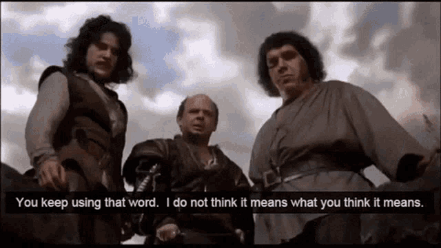
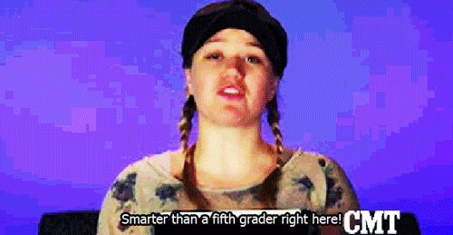

Hi! Thanks for reading update #2 for my dissertation study :satisfied:
In my last post (click here if you didn’t read it), I mentioned how difficult psychological scale development actually is. I wrestled with knowing if two different questions on the scale/survey meant the same thing. For example, does “this food bussin’” have the same EXACT meaning as “this food slaps” or is there some weird nuance between the two? Moreover, do you even know what “bussin” or “slaps” means? If you do, would you define or UNDERSTAND them differently?
Now :rainbow:imagine:rainbow: giving these two questions to 300 high school students. Think they would understand these two sentences the way they are meant to be understood? Yeah, idk tbh.
This is something researchers struggle with when developing psychological scales. And something I was stressing over at the start of my study. But don’t worry, that’s why :sparkles:cognitive interviews:sparkles: exist.
I’ll be making a brief Princess Bride :princess::bride_with_veil: reference so if you haven’t seen it, you should go to the doctor’s office and get your brain checked because it’s a classic. Come back once they have deemed you gucci :ok_hand:

Whenever I think of cognitive interviews, Inigo Montoya’s famous line come to mind
“You keep using that word… I do not think it means what you think it means.”
The entire purpose for conducting cognitive interviews is to ensure the items/questions used in the scale/survey you’re developing is understood clearly and as intended to the population that will complete the scale. In other words, we interview individuals to understand their cognitive process (aka how their brain works when thinking about something). It’s a bit different than normal interviews. AND WAY COOLER.
So that’s exactly what I did :nail_care:
This was my first time conducting cognitive interviews so I leaned heavily on Willis (1999) Manual for Cognitive Interviews to prepare. After making revisions to the initial scales based on an expert panel review using the delphi method, I created an interview protocol based on the revised scale and included probing questions to examine HOW participants UNDERSTOOD the scale/survey items/questions.
Given this was my first time using this method, a few friends volunteered their time for me to practice these techniques before interviewing the individuals for my study. AND LET ME TELL YOU HOW HELPFUL THIS WAS. Thank you if you volunteered :sob:
Thank you for asking! I conducted two cognitive interviews with individuals in my study population AND IT WENT SO WELL. Hands down the coolest scientist thing I have ever done (and I’ve done a lot!) :eyes:
I can confidently say that these interviews were ABSOLUTELY instrumental to the validity and rigor of this study thus far.
For these interviews, I gave the individuals a printed copy of the survey/scale and we walked through it outloud as if they were taking the survey on their own.
One :bangbang:major:bangbang: finding is that both individuals inadvertently skipped certain questions due to the format/design of the scale/survey. Another :bangbang:major:bangbang: finding from these interviews was that the participants didn’t understand certain words used in the survey questions.
The cognitive interviews revealed a LOT of good information and how the scale could be further improved and revised to be easily understood and accessible for the participants in this study.
It was also super cool, because I also examined the body language and behavior of the participants, not just their verbal responses. Participants’ body language would shift when they would read questions that were more difficult to understand (required higher cognitive demand). This was evidenced by students taking longer to answer the question compared to other questions, would make a discerning face, or hesitate.
It felt like I could see how their brain was working throughout the interviews :eyes:
I’ll give some :sparkles: free ninety-ninety :sparkles: :money_with_wings: advice for those who are thinking about conducting cognitive interviews.
If you’re developing a scale, you should REALLY consider conducting cognitive interviews. I’m really inclined to say those who don’t implement cognitive interviews are doing scale development wrong, but I won’t be hasty with that thought :innocent: The cognitive interviews made me feel more confident in the scale development process as the participants’ responses nicely aligned with the body of literature on this topic and helped understand how I can think like an adolescent.

We have a pilot survey lined up this month and the :sparkles:final:sparkles: scale administration next month. The big papa data collection efforts are coming up and I’m equally excited and nervous at the same time :grimacing:
Wish me luck :four_leaf_clover: More updates to come :eyes: